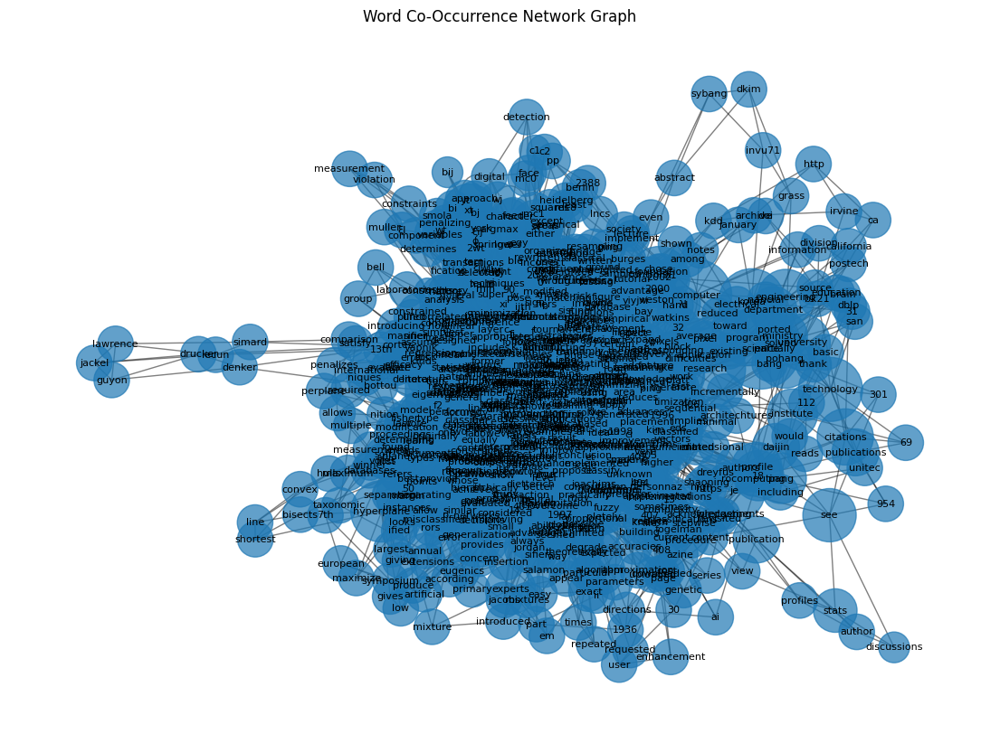
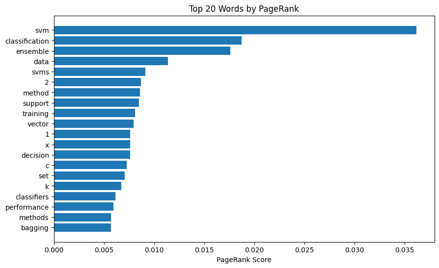
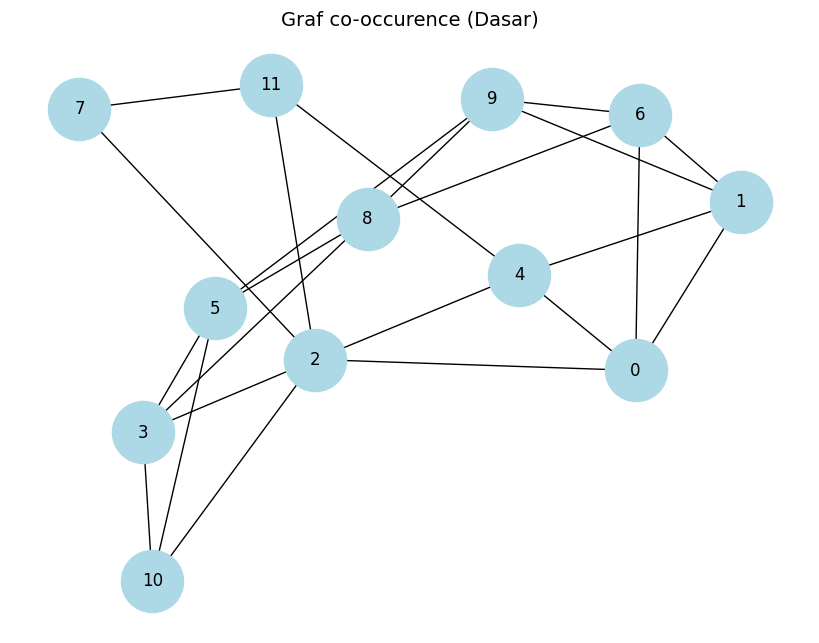

Word Graph Paper:svm#
pip install --upgrade pymupdf
Collecting pymupdf
Downloading pymupdf-1.26.6-cp310-abi3-manylinux_2_28_x86_64.whl.metadata (3.4 kB)
Downloading pymupdf-1.26.6-cp310-abi3-manylinux_2_28_x86_64.whl (24.1 MB)
━━━━━━━━━━━━━━━━━━━━━━━━━━━━━━━━━━━━━━━━ 24.1/24.1 MB 75.7 MB/s eta 0:00:00
?25hInstalling collected packages: pymupdf
Successfully installed pymupdf-1.26.6
from google.colab import drive
drive.mount('/content/drive')
Mounted at /content/drive
%cd /content/drive/MyDrive/PPW
/content/drive/MyDrive/PPW
import pymupdf
doc = pymupdf.open("svm.pdf") # open a document
out = open("output.txt", "wb") # create a text output
for page in doc: # iterate the document pages
text = page.get_text().encode("utf8") # get plain text (is in UTF-8)
out.write(text) # write text of page
out.write(bytes((12,))) # write page delimiter (form feed 0x0C)
out.close()
%%capture
!pip install nltk
import nltk
nltk.download('punkt') # hanya perlu sekali
nltk.download('punkt_tab') # opsional, untuk versi terbaru NLTK (≥3.8.2)
[nltk_data] Downloading package punkt to /root/nltk_data...
[nltk_data] Unzipping tokenizers/punkt.zip.
[nltk_data] Downloading package punkt_tab to /root/nltk_data...
[nltk_data] Unzipping tokenizers/punkt_tab.zip.
True
with open('output.txt', 'r', encoding='utf-8') as file:
teks = file.read()
print(teks[:200]) # tampilkan 200 karakter pertama
See discussions, stats, and author profiles for this publication at: https://www.researchgate.net/publication/220785878
Support Vector Machine Ensemble with Bagging
Conference Paper in Lecture Notes
# Install: pip install nltk
import nltk
#text = "Ini adalah kalimat pertama. Ini kalimat kedua? Ya!"
sentences = nltk.sent_tokenize(teks)
print(sentences)
# Output: ['Ini adalah kalimat pertama.', 'Ini kalimat kedua?', 'Ya!']
['See discussions, stats, and author profiles for this publication at: https://www.researchgate.net/publication/220785878\nSupport Vector Machine Ensemble with Bagging\nConference Paper\xa0\xa0in\xa0\xa0Lecture Notes in Computer Science · January 2002\nDOI: 10.1007/3-540-45665-1_31\xa0·\xa0Source: DBLP\nCITATIONS\n112\nREADS\n5,212\n5 authors, including:\nS. Pang\nUnitec Institute of Technology\n69 PUBLICATIONS\xa0\xa0\xa02,075 CITATIONS\xa0\xa0\xa0\nSEE PROFILE\nHong-Mo Je\nPohang University of Science and Technology\n18 PUBLICATIONS\xa0\xa0\xa0954 CITATIONS\xa0\xa0\xa0\nSEE PROFILE\nDaijin Kim\nPohang University of Science and Technology\n301 PUBLICATIONS\xa0\xa0\xa010,656 CITATIONS\xa0\xa0\xa0\nSEE PROFILE\nAll content following this page was uploaded by Hong-Mo Je on 30 May 2014.', 'The user has requested enhancement of the downloaded file.', 'Support Vector Machine Ensemble with Bagging\nHyun-Chul Kim, Shaoning Pang, Hong-Mo Je,\nDaijin Kim, and Sung-Yang Bang\nDepartment of Computer Science and Engineering\nPohang University of Science and Technology\nSan 31, Hyoja-Dong, Nam-Gu, Pohang, 790-784, Korea\n{grass,invu71,dkim,sybang}@postech.ac.kr\nAbstract.', 'Even the support vector machine (SVM) has been proposed\nto provide a good generalization performance, the classification result\nof the practically implemented SVM is often far from the theoretically\nexpected level because their implementations are based on the approx-\nimated algorithms due to the high complexity of time and space.', 'To\nimprove the limited classification performance of the real SVM, we pro-\npose to use the SVM ensembles with bagging (bootstrap aggregating).', 'Each individual SVM is trained independently using the randomly chosen\ntraining samples via a bootstrap technique.', 'Then, they are aggregated\ninto to make a collective decision in several ways such as the major-\nity voting, the LSE(least squares estimation)-based weighting, and the\ndouble-layer hierarchical combining.', 'Various simulation results for the\nIRIS data classification and the hand-written digit recognitionshow that\nthe proposed SVM ensembles with bagging outperforms a single SVM in\nterms of classification accuracy greatly.', '1\nIntroduction\nThe support vector machine is a new and promising classification and regression\ntechnique proposed by Vapnik and his group at AT&T Bell Laboratories [1].', 'The\nSVM learns a separating hyperplane to maximize the margin and to produce a\ngood generalization ability [2].', 'Recent theoretical research work has solved the\nexisting difficulties of using the SVM in practical applications [3, 4].', 'By now,\nit has been successfully applied in many areas, such as the face detection, the\nhand-writing digital character recognition, and the data mining, etc.', 'However, the SVM has two drawbacks.', 'First, since it is originally a model\nfor the binary-class classification, we should use a combination of SVMs for the\nmulti-class classification.', 'There are methods for combining binary classifiers for\nthe multi-class classification [6, 7], but when it has been applied to SVM, the\nperformance has not seemed to improve as much as in the binary classification.', 'Second, since learning SVM is time-consuming for a large scale of data, we\nshould use some approximate algorithms [2].', 'Using the approximate algorithms\ncan reduce the computation time, but degrade the classification performance.', 'To overcome the above drawbacks, we propose to use the SVM ensembles.', 'We expect that the SVM ensemble can improve the classification performance\nS.-W. Lee and A. Verri (Eds.', '): SVM 2002, LNCS 2388, pp.', '397–408, 2002.\nc\n⃝Springer-Verlag Berlin Heidelberg 2002\n\x0c398\nHyun-Chul Kim et al.', 'greatly than using a single SVM by the following fact.', 'Each individual SVM has\nbeen trained independently from the randomly chosen training samples and the\ncorrectly- classified area in the space of data samples of each SVM becomes lim-\nited to a certain area.', 'We can imagine that a combination of several SVMs will\nexpand the correctly-classified area incrementally.', 'This implies the improvement\nof classification performance by using the SVM ensemble.', 'Likewise, we also ex-\npect that the SVM ensemble will improve the classification performance in case\nof the multi-class classification.', 'The idea of the SVM ensemble has been proposed in [8].', 'They used the\nboosting technique to train each individual SVM and took another SVM for\ncombining several SVMs.', 'In this paper, we propose to use the SVM ensemble\nbased on the bagging technique where each individual SVM is trained over the\nrandomly chosen training samples via a bootstrap technique and the indepen-\ndently trained several SVMs are aggregated in various ways such as the majority\nvoting, the LSE-based weighting, and the double-layer hierarchical combining.', 'This paper is organized as follows.', 'Section 2 describes the theoretical back-\nground of the SVM.', 'Section 3 describes the SVM ensembles, the bagging method\nand three different combination methods.', 'Section 4 shows the simulation results\nwhen the proposed SVM ensemble are applied to the classification problems such\nas the IRIS data classification and the hand-written digit recognition.Finally, a\nconclusion is drawn.', '2\nSupport Vector Machines\nThe classical emprical risk minimization approach, which determines the classi-\nfication decision function by minimizing the empirical risk as\nR = 1\nl\nL\n\x01\ni=1\n|f(xi) −yi|,\n(1)\nwhere L and f are the size of examples and the classification decision func-\ntion, respectively.', 'For SVM, determining an optimal separating hyperplane that\ngives low generalization error is the primary concern.', 'Usually, the classification\ndecision function in the linearly separable problem is represented by\nfw,b = sign(w · x + b).', '(2)\nIn SVM, the optimal separating hyperplane is determined by giving the largest\nmargin of separation between different classes.', 'This optimal hyperplane bisects\nthe shortest line between the convex hulls of the two classes.', 'The optimal hy-\nperplane is required to satisfy the following constrained minimization as\nMin : 1\n2wT w,\nyi(w · xi + b) ≥1.', '(3)\n\x0cSupport Vector Machine Ensemble with Bagging\n399\nFor the linearly non-separable case, the minimization problem needs to be mod-\nified to allow the misclassified data points.', 'This modification results in a soft\nmargin classifier that allows but penalizes errors by introducing a new set of\nvariables ξl\ni=1 as the measurement of violation of the constraints.', 'Min : 1\n2wT w + C(\nL\n\x01\ni=1\nξi)k,\nyi(wT ϕ(xi) + b) ≥1 −ξi,\n(4)\nwhere C and k are used to weight the penalizing variables ξi, ϕ(·) is a nonlinear\nfunction which maps the input space into a higher dimensional space.', 'Minimizing\nthe first term in Eq.', '(4) is corresponding to minimizing the VC-dimension of\nthe learning machine and minimizing the second term in Eq.', '(4) controls the\nempirical risk.', 'Therefore, in order to solve problem Eq.', '(4), we need to construct\na set of functions, and implement the classical risk minimization on the set of\nfunctions.', 'Here, a Lagrangian method is used to solve the above problem.', 'Then,\nEq.', '(4) can be written as\nMax : F(∧) = ∧· 1 −1\n2 ∧·D∧,\n∧· y = 0; ∧≤C; ∧≥0,\n(5)\nwhere ∧= (λ1, ..., λL),D = yiyjxi · xj.', 'For the binary classification, the decision\nfunction Eq.', '(2) can be rewritten as\nf(x) = sign(\nl\n\x01\ni=1\nyiλ∗\ni (x) + b∗)).', '(6)\nwhere λ∗\ni (x) = λiyiK(x, xi), and K(x, xi) = φ(x)φ(xi).', '( K(x, xi) can be sim-\nplifed by the kernel trick [9]. )', 'For the multi-class classification, we can extend the SVM in the following two\nways.', 'One method is called the “one-against-all” method [6], where we have as\nmany SVMs as the number of classes.', 'The ith SVM is trained from the training\nsamples where some examples contained in the ith class have ”+1” labels, and\nother examples contained in the other classes have ”-1” labels.', 'Then, Eq.', '(4) is\nmodified into\nMin : F(∧) = 1\n2(wi)T wi + C(\nL\n\x01\nt=1\n(ξi)t)k\nyi((wi)T ϕ(xt) + bi) ≥1 −(ξi)t, if xi ∈Ci,\nyi((wi)T ϕ(xt) + bi) ≤1 −(ξi)t, if xi ∈¯Ci,\n(ξi)t > 0, i = 1, ..., L,\n(7)\n\x0c400\nHyun-Chul Kim et al.', 'where Ci is the set of data of class i.', 'The decision function of (7) becomes\nf(x) = sign( Max\nj∈1,2,...,C((wj)T · ϕ(xj) + bj)),\n(8)\nwhere C is the number of the classes.', 'Another method is called the one-against-one method [7].', 'When the number\nof classes is C, this method constructs C(C −1)/2 SVM classifiers.', 'The ijth\nSVM is trained from the training samples where some examples contained in\nthe ith class have ”+1” labels and other examples contained in the jth class\nhave ”-1” labels.', 'Then, Eq.', '(4) is modified into\nMin : F(∧) = 1\n2(wij)T wij + C(\nL\n\x01\nt=1\n(ξij)t)k\nyt((wij)T ϕ(xt) + bij) ≥1 −(ξij)t, if xt ∈Ci,\nyt((wij)T ϕ(xt) + bij) ≤1 −(ξij)t, if xt ∈Cj,\n(ξij)t > 0, t = 1, ..., L.\n(9)\nThe class decision in this type of multi-class classifier can be performed in the\nfollowing two ways.', 'The first decision is based on the “Max Wins” voting strat-\negy, in which C(C −1)/2 binary SVM classifiers will vote for each class, and the\nwinner class having the maximum votes is the last classification decision.', 'The\nsecond method uses the tournament match, which reduces the classification time\nto the log scale.', '3\nSupport Vector Machine Ensemble\nAn ensemble of classifiers is a collection of several classifiers whose individual\ndecisions are combined in some way to classify the test examples [10].', 'It is known\nthat an ensemble often shows much better performance than the individual clas-\nsifiers that make it up.', 'Hansen et.', 'al.', '[11] shows why the ensemble shows better\nperformance than individual classifiers as follows.', 'Assume that there are an en-\nsemble of n classifiers: {f1, f2, .', '.', '.', ', fn} and consider a test data x.', 'If all the classi-\nfiers are identical, they are wrong at the same data, where an ensemble will show\nthe same performance as individual classifiers.', 'However, if classifiers are different\nand their errors are uncorrelated, then when fi(x) is wrong, most of other classi-\nfiers except for fi(x) may be correct.', 'Then, the result of majority voting can be\ncorrect.', 'More precisely, if the error of individual classifier is p < 1/2 and the er-\nrors are independent, then the probability pE that the result of majority voting is\nincorrect is \x02n\nk=⌈n/2⌉pk(1−p)(n−k) (< \x02n\nk=⌈n/2⌉( 1\n2)k( 1\n2)(n−k) = \x02n\nk=⌈n/2⌉( 1\n2)n).', 'When the size of classifiers n is large, the probability pE becomes very small.', 'The SVM has been known to show a good generalization performance and\nis easy to learn exact parameters for the global optimum[2].', 'Because of these\n\x0cSupport Vector Machine Ensemble with Bagging\n401\nadvantages, their ensemble may not be considered as a method for improving\nthe classification performance greatly.', 'However, since the practical SVM has\nbeen implemented using the approximated algorithms in order to reduce the\ncomputation complexity of time and space, a single SVM may not learn exact\nparameters for the global optimum.', 'Sometimes, the support vectors obtained\nfrom the learning is not sufficient to classify all unknown test examples com-\npletely.', 'So, we can not guarantee that a single SVM always provides the global\noptimal classification performance over all test examples.', 'To overcome this limitation, we propose to use an ensemble of support vec-\ntor machines.', 'Similar arguments mentioned above about the general ensemble\nof classifiers can also be applied to the ensemble of support vector machines.', 'Figure 1 shows a general architecture of the proposed SVM ensemble.', 'During\nthe training phase, each individual SVM is trained independently by its own\nreplicated training data set via a bootstrap method explained in the Section\n3.1.', 'All constituent SVMs will be aggregated by various combination strategies\nexplained in the Section 3.2.', 'During the testing phase, a test example is applied\nto all SVMs simultaneously and a collective decision is obtained based on the\naggregation strategy.', 'On the other hand, the advantage of using the SVM ensemble over a single\nSVM can be achieved equally in the case of multi-class classification.', 'Since the\nSVM is originally a binary classifier, many SVMs should be combined for the\nmulti-class classification as mentioned in 2.2.', 'The SVM classifier for the multi-\nFig.', '1.', 'A general architecture of the SVM ensemble\n\x0c402\nHyun-Chul Kim et al.', 'class classification does not show as good performance as that for the binary-\nclass classification.', 'So, we can also improve the classification performance in the\nmulti-class classification by taking the SVM ensemble where each SVM classifier\nis designed for the multi-class classification.', '3.1\nConstructing the SVM Ensembles Using Bagging\nIn this work, we adopt a bagging technique [12] to construct the SVM ensemble.', 'In bagging, several SVMs are trained independently via a bootstrap method and\nthen they are aggregated via an appropriate combination technique.', 'Usually, we have a single training set Usually, we have a single training set\nT R = {(xi; yi)|i = 1, 2, .', '.', '.', ', l}.', 'But we need K training samples sets to construct\nthe SVM ensemble with K independent SVMs.', 'From the statistical fact, we need\nto make the training sample sets different as much as possible in order to obtain\nhigher improvement of the aggregation result.', 'For doing this, we often use the\nbootstrap technique as follows.', 'Bootstrapping builds K replicate training data sets {T RB\nk |k = 1, 2, .', '.', '., K}\nby randomly resampling, but with replacement, from the given training data\nset T R repeatedly.', 'Each example xi in the given training set T R may appear\nrepeated times or not at all in any particular replicate training data set.', 'Each\nreplicate training set will be used to train a certain SVM.', '3.2\nAggregating Support Vector Machines\nAfter training, we need to aggregate several independently trained SVMs in an\nappropriate combination manner.', 'We consider two types of combination tech-\nniques such as the linear and nonlinear combination method.', 'The linear combi-\nnation method, as a linear combination of several SVMs, includes the majority\nvoting and the LSE-based weighting.', 'The majority voting and the LSE-based\nweighting are often used for the bagging and the boosting, respectively.', 'A non-\nlinear method, as a nonlinear combination of several SVMs, includes the double-\nlayer hierarchical combining that use another upper-layer SVM to combine sev-\neral lower-layer SVMs.', 'Majority Voting Majority voting is the simplest method for combining several\nSVMs.', 'Let fk(k = 1, 2, .', '.', '.', ', K) be a decision function of the kth SVM in the\nSVM ensemble and Cj(j = 1, 2, .', '.', '., C) denote a label of the j-th class.', 'Then,\nlet Nj = #{k|fk(x) = Cj}, i.e.', 'the number of SVMs whose decisions are known\nto the jth class.', 'Then, the final decision of the SVM ensemble fmv(x) for a given\ntest vector x due to the majority voting is determined by\nfmv(x) = argmax\nj\nNj.', '(10)\n\x0cSupport Vector Machine Ensemble with Bagging\n403\nThe LSE-Based Weighting The LSE-based weighting treats several SVMs\nin the SVM ensemble with different weights.', 'Often, the weights of several SVMs\nare determined in proportional to their accuracies of classifications [13].', 'Here,\nwe propose to learn the weights using the LSE method as follows.', 'Let fk(k = 1, 2, .', '.', '., K) be a decision function of the kth SVM in the SVM\nensemble that is trained by a replicate training data set T hauB\nk = {(x′\ni; y′\ni)|i =\n1, 2, .', '.', '.', ', L}.', 'The weight vector w can be obtained by wE = A−1y, where\nA = (fi(xj))K×L, and y = (yj)1×L.', 'Then, the final decision of the SVM ensem-\nble fmv(x) for a given test vector x due to the LSE-based weighting is determined\nby\nfLSE(x) = sign(w · [(fi(x))K×1])\n(11)\nThe Double-Layer Hierarchical Combining We can use another SVM to\naggregate the outputs of several SVMs in the SVM ensemble.', 'So, this combi-\nnation consists of a double-layer of SVMs hierarchically where the outputs of\nseveral SVMs in the lower layer feed into a super SVM in the upper layer.', 'This\ntype of combination looks similar of the mixture of experts introduced by M.\nJordan et.', 'al.', '[14].', 'Let fk(k = 1, 2, .', '.', '., K) be a decision function of the kth SVM in the SVM\nensemble and F be a decision function of the super SVM in the upper layer.', 'Then, the final decision of the SVM ensemble fSV M(x) for a given test vector x\ndue to the double-layer hierarchical combining is determined by\nfSV M(x) = F((f1(x), f2(x), .', '.', '.', ', fK(x))),\n(12)\nwhere K is the number of SVMs in the SVM ensemble.', '3.3\nExtension of the SVM Ensemlbe to the Multi-class\nClassification\nIn section 2, we explained two kinds of extension methods such as ”one-against-\nall and one-against-one methods” in order to apply the SVM to the multi-class\nclassification problem.', 'We can use these extension methods equally in the case of\nthe SVM ensemble for the multi-class classification.', 'For the C-class classification\nproblem, we can have two types of extensions according to the insertion level\nof the SVM ensemble: (1) the binary-classifier-level SVM ensemble and (2) the\nmulti-classifier-level SVM ensemble.', 'The binary-classifier-level SVM ensemble consists of C SVM ensembles in the\ncase of “one-against-all” method or C(C −1)/2 SVM ensembles in the case of\n“one-against-one” method.', 'And, each SVM ensemble consists of K independent\nSVMs.', 'So, the SVM ensemble is built in the level of binary classifiers.', 'We obtain\nthe final decision from the decision results of many SVM ensembles via either\nthe “Max Wins” voting strategy or the tournament match.', 'The multi-classifier-level SVM ensemble consists of K multi-class classifiers.', 'And each multi-class classifier consists of C binary classifiers in the case of\n\x0c404\nHyun-Chul Kim et al.', '“one-against-all” method or for C(C −1)/2 binary classifiers in the case of “one-\nagainst-one” method.', 'So, the SVM ensemble is built in the level of multi-class\nclassifiers.', 'We obtain the final decision from the decision results of many multi-\nclass classifiers via an appropriate aggregating strategy of the SVM ensemble.', '4\nSimulation Results\nTo evaluate the efficacy of the proposed SVM ensemble using the bagging tech-\nnique, we have performed three different classification problems such as the IRIS\ndata classification, the UCI hand-written digit recognition.We used four different\nclassification methods such as a single SVM, and three different SVM ensem-\nbles with different aggregating strategies like the majority voting, the LSE-based\nweighting, and the double-layer hierarchical combining.', '4.1\nIRIS Data Classification\nThe IRIS data set[15, 16] is one of the best known databases to be found in\nthe pattern recognition literature.', 'The IRIS data set contains 3 classes where\neach class consists of 50 instances.', 'Each class refers to a type of IRIS planet.', 'One class is linearly separable from the other classes but they are not linearly\nseparable from each other.', 'We used the one-against-one method for the multi-class extension and took\nthe binary-classifier-level SVM ensemble for the classification.', 'So, for the 3-class\nclassification problem and one-against-one extension method, there are three\nbinary-classifier-level\nSVM\nensembles\n(SV MC1,C1, SV MC1,C2, SV MC1,C3)\nwhere each SVM ensemble consists of 5 independent SVMs.', 'The final decision\nare obtained from the decision results of three SVM ensembles via a tournament\nmatching scheme.', 'Each SVM used 2-d polynomial kernel function.', 'We selected randomly 90 data samples for the training set.', 'For bootstrap-\nping, we re-sampled randomly 60 data samples with replacement from the train-\ning data set.', 'We trained each SVM independently over the replicated training\ndata set and aggregated several trained SVMs via three different combination\nmethods.', 'We test four different classification methods using the test data set con-\nsisting of 60 IRIS data.', 'Table 1 shows the classification results of four different\nclassification methods for the IRIS data classification.', 'Table 1.', 'The classification results of IRIS data classification\nMethod\nClassification rate\nSingle SVM\n96.73%\nMajoirity voting\n98.0%\nLSE-based weighting\n98.66%\nHierarchical SVM\n98.66%\n\x0cSupport Vector Machine Ensemble with Bagging\n405\n4.2\nUCI Hand-Written Digit Recognition\nWe used the UCI hand-written digit data [16].', 'Some digits in the database are\nshown in Figure 2.', 'Among the UCI hand-written digits, we chose randomly 3,828\ndigits as a training data set and the remaining 1,797 digits as a test data set.', 'The original image of each digit has the size of 32 × 32 pixels.', 'It is reduced to\nthe size of 8×8 pixels where each pixel is obtained from the average of the block\nof 4 × 4 pixels in the original image.', 'So each digit is represented by a feature\nvector with the size of 64 × 1.', 'Fig.', '2.', 'Examples of hand-written digits in UCI database\nWe used one-against-one methods.', 'We constructed a SVM ensemble, con-\nsiting of 11 SVMs, for one-against-one classification, and used the tournament\nscheme for decision.', 'Each SVM used 2-d polynomial kernel function.', 'For bag-\nging, we sampled 2000 data randomly for an individual SVM.', 'We trained each\nSVM and combined three methods, such as unweighted voting, weighted voting\n(using LSE), and a combining SVM.', 'We applied a single SVM for the compar-\nison.', 'Table 2 shows the performance of a single SVM and bagging SVMs with\nthree combining methods for the IRIS data classification.', 'We used the one-against-one method for the multi-class extension and took\nthe binary-classifier-level SVM ensemble for the classification.', 'So, for the 10-\nclass classification problem and one-against-one extension method, there are 45\nbinary-classifier-level SVM ensembles (SV MC0,C1, SV MC0,C2, .', '.', '.', ', SV MC8,C9)\nwhere each SVM ensemble consists of 11 independent SVMs.', 'The final decision\nare obtained from the decision results of three SVM ensembles via a tournament\nmatching scheme.', 'Each SVM used 2-d polynomial kernel function.', 'For bootstrapping, we re-sampled randomly 2,000 digits samples with re-\nplacement from the training data set consisting of 3,828 digit samples.', 'We trained\neach SVM independently over the replicated training data set and aggregated\nseveral trained SVMs via three different combination methods.', 'We test four dif-\nferent classification methods using the test data set consisting of 1,797 digits.', '406\nHyun-Chul Kim et al.', 'Table 2 shows the classification results of four different classification methods\nfor the hand-written digit data classification.', 'Table 2.', 'The classification results of UCI hand-written digit recognition\nMethod\nClassification rate\nSingle SVM\n96.99%\nMajority voting\n97.55%\nLSE-based weighting\n97.82%\nHierarchical SVM\n98.01%\n5\nConclusion\nUsually, the practical SVM has been implemented based on the approximation\nalgorithm to reduce the cost of time and space.', 'So, the obtained classification\nperformance is far from the theoretically expected level of it.', 'To overcome this\nlimitation, we addressed the SVM ensemble that consists of several indepen-\ndently trained SVMs.', 'For training each SVM, we generated many replicated\ntraining sample sets via the bootstrapping technique.', 'Then, all independently\ntrained SVMs over the replicated training sample sets were aggregated by three\ncombination techniques such as the majority voting, the LSE-based weighting,\nand the double-layer hierarchical combining.', 'We also extended the SVM ensemble to the multi-class classification problem:\nthe binary-classifier-level SVM ensemble and the multi-classifier-level SVM en-\nsemble.', 'The former did build the SVM ensemble in the level of binary classifiers\nand the latter did build the SVM ensemble in the level of multi-class classifiers.', 'The former had C SVM ensembles in the case of “one-against-all” method or\nC(C −1)/2 SVM ensembles in the case of “one-against-one” method.', 'And, each\nSVM ensemble consisted of K independent SVMs.', 'The latter consisted of K\nmulti-class classifiers.', 'And each multi-class classifier consists of C binary classi-\nfiers in the case of “one-against-all” method or for C(C −1)/2 binary classifiers\nin the case of “one-against-one” method.', 'We evaluated the classification performance of the proposed SVM ensemble\nover three different multi-class classification problems such as the IRIS data clas-\nsification, the hand-written digit recognition.', 'The SVM ensembles outperform\na single SVM for all applications in terms of classification accuracy.', 'For three\ndifferent aggregation methods, the classification performance is superior in the\norder of the double-layer hierarchical combining, the LSE-based weighting, and\nthe majority voting.', 'In the future, we will consider other aggregation scheme\nlike boosting for constructing the SVM ensemble.', 'Support Vector Machine Ensemble with Bagging\n407\nAcknowledgements\nThe authors would like to thank the Ministry of Education of Korea for its fi-\nnancial support toward the Electrical and Computer Engineering Division at\nPOSTECH through its BK21 program.', 'This research was also partially sup-\nported by the Brain Science and Engineering Research Program of the Ministry\nof Science and Technology, Korea, and by the Basic Research Institute Support\nProgram of the Korea Research Foundation.', 'References\n[1] Cortes, C., Vapnik, V.: Support vector network.', 'Machine Learning.', '20 (1995)\n273–297\n397\n[2] Burges, C.: A Tutorial on Support Vector Machines for Pattern Recognition.', 'Data\nMining and Knowledge Discovery.', '2(2) (1998) 121–167\n397, 400\n[3] Joachims, T.: Making large-scale support vector machine learning practical.', 'Ad-\nvances in Kernel Methods: Support Vector Machines, MIT Press, Cambridge, MA\n(1999)\n397\n[4] Platt, J.: Fast training of support vector machines using sequential minimal op-\ntimization.', 'Advances in Kernel Methods: Support Vector Machines, MIT Press,\nCambridge, MA (1999)\n397\n[5] Weston, J., Watkins, C.: Support Vector Machines for Multi-Class Pattern Recog-\nnition.', 'Proceedings of the 7th European Symposium on Artificial Neural Networks\n(1999)\n[6] Bottou, L., Cortes, C., Denker, J., Drucker, H., Guyon, I., Jackel, Lawrence D.,\nLeCun, Y., M¨uller U., S¨ackinger E., Simard, P., Vapnik, V.: Comparison of clas-\nsifier methods: a case study in handwriting digit recognition.', 'Proceedings of the\n13th International Conference on Pattern Recognition.', 'IEEE Computer Society\nPress (1994) 77–87\n397, 399\n[7] Knerrm, S., Personnaz, L., Dreyfus, G.: Single-layer learning revisited: a stepwise\nprocedure for building and training a neural network.', 'In: Fogelman, J.(eds.', '): Neu-\nrocomputing: Algorithms, Architechtures and Application, Springer-Verlag (1990)\n397, 400\n[8] Vapnik, V.: The Nature of Statistical Learning Theory.', 'Springer, New York, 1999\n398\n[9] Sch¨olkopf, B., Smola A., and Muller K.: Nonlinear component analysis as a kernel\neigenvalue problem.', 'Neural Computation, 10(5) (1998) 1299-1319\n399\n[10] Dietterich, T.: Machine Learning Research: Four Current Directions.', 'The AI Mag-\nazine, 18(4) (1998) 97–136\n400\n[11] Hansen, L., Salamon, P.: Neural network ensembles.', 'IEEE Transactions on Pat-\ntern Analysis and Machine Intelligence, 12 (1990) 993–1001\n400\n[12] Breiman, L.: Bagging predictors.', 'Machine Learning, 24(2) (1996) 123–140, 1996\n402\n[13] Kim, D., Kim, C.: Forecasting time series with genetic fuzzy predictor ensemble.', 'IEEE Transaction on Fuzzy Systems, 5(4) (1997) 523–535\n403\n[14] Jordan, M., Jacobs, R., Hierarchical mixtures of experts and the EM algorithm.', 'Neural Computation 6(5) (1994) 181–214\n403\n[15] Fisher, R.: The use of multiple measurements in taxonomic problems.', 'Annual\nEugenics, 7, Part II (1936) 179–188\n404\n\x0c408\nHyun-Chul Kim et al.', '[16] Bay, B.: The UCI KDD Archive [http://kdd.ics.uci.edu].', 'Irvine, CA: University\nof California, Department of Information and Computer Science (1999) 404, 405\nView publication stats']
import pandas as pd
df = pd.DataFrame(sentences, columns=['kalimat'])
print(df)
kalimat
0 See discussions, stats, and author profiles fo...
1 The user has requested enhancement of the down...
2 Support Vector Machine Ensemble with Bagging\n...
3 Even the support vector machine (SVM) has been...
4 To\nimprove the limited classification performa...
.. ...
240 IEEE Transaction on Fuzzy Systems, 5(4) (1997)...
241 Neural Computation 6(5) (1994) 181–214\n403\n[...
242 Annual\nEugenics, 7, Part II (1936) 179–188\n4...
243 [16] Bay, B.: The UCI KDD Archive [http://kdd....
244 Irvine, CA: University\nof California, Departm...
[245 rows x 1 columns]
df.to_csv('kalimat_svm.csv', index=False, encoding='utf-8')
Untuk membuat word graph
Lanjutkan dengan menggunakan https://www.geeksforgeeks.org/nlp/co-occurence-matrix-in-nlp/
import pandas as pd
df = pd.read_csv("/content/drive/MyDrive/PPW/kalimat_svm.csv")
print(df.head()) # lihat isi awal
print(df.columns) # lihat nama kolom
kalimat
0 See discussions, stats, and author profiles fo...
1 The user has requested enhancement of the down...
2 Support Vector Machine Ensemble with Bagging\n...
3 Even the support vector machine (SVM) has been...
4 To\nimprove the limited classification performa...
Index(['kalimat'], dtype='object')
import nltk
from nltk.corpus import stopwords
from nltk.tokenize import word_tokenize
from collections import defaultdict, Counter
import numpy as np
import pandas as pd
# Download NLTK resources
nltk.download('punkt')
nltk.download('stopwords')
# Load CSV
df = pd.read_csv("/content/drive/MyDrive/PPW/kalimat_svm.csv")
# Gabungkan semua teks di kolom 'kalimat' menjadi 1 teks panjang
text = " ".join(df['kalimat'].astype(str).tolist())
# Preprocess the text
stop_words = set(stopwords.words('english'))
words = word_tokenize(text.lower())
words = [word for word in words if word.isalnum() and word not in stop_words]
# Define the window size for co-occurrence
window_size = 2
# Create a list of co-occurring word pairs
co_occurrences = defaultdict(Counter)
for i, word in enumerate(words):
for j in range(max(0, i - window_size), min(len(words), i + window_size + 1)):
if i != j:
co_occurrences[word][words[j]] += 1
# Create a list of unique words
unique_words = list(set(words))
# Initialize the co-occurrence matrix
co_matrix = np.zeros((len(unique_words), len(unique_words)), dtype=int)
# Populate the co-occurrence matrix
word_index = {word: idx for idx, word in enumerate(unique_words)}
for word, neighbors in co_occurrences.items():
for neighbor, count in neighbors.items():
co_matrix[word_index[word]][word_index[neighbor]] = count
# Create a DataFrame for better readability
co_matrix_df = pd.DataFrame(co_matrix, index=unique_words, columns=unique_words)
# Display the co-occurrence matrix
co_matrix_df
[nltk_data] Downloading package punkt to /root/nltk_data...
[nltk_data] Package punkt is already up-to-date!
[nltk_data] Downloading package stopwords to /root/nltk_data...
[nltk_data] Package stopwords is already up-to-date!
| practical | linearly | need | postech | 69 | 399 | ξi | lawrence | much | nature | ... | experts | denker | contains | personnaz | xi | input | wij | part | designed | let | |
|---|---|---|---|---|---|---|---|---|---|---|---|---|---|---|---|---|---|---|---|---|---|
| practical | 0 | 0 | 0 | 0 | 0 | 0 | 0 | 0 | 0 | 0 | ... | 0 | 0 | 0 | 0 | 0 | 0 | 0 | 0 | 0 | 0 |
| linearly | 0 | 0 | 0 | 0 | 0 | 1 | 0 | 0 | 0 | 0 | ... | 0 | 0 | 0 | 0 | 0 | 0 | 0 | 0 | 0 | 0 |
| need | 0 | 0 | 0 | 0 | 0 | 0 | 0 | 0 | 0 | 0 | ... | 0 | 0 | 0 | 0 | 0 | 0 | 0 | 0 | 0 | 0 |
| postech | 0 | 0 | 0 | 0 | 0 | 0 | 0 | 0 | 0 | 0 | ... | 0 | 0 | 0 | 0 | 0 | 0 | 0 | 0 | 0 | 0 |
| 69 | 0 | 0 | 0 | 0 | 0 | 0 | 0 | 0 | 0 | 0 | ... | 0 | 0 | 0 | 0 | 0 | 0 | 0 | 0 | 0 | 0 |
| ... | ... | ... | ... | ... | ... | ... | ... | ... | ... | ... | ... | ... | ... | ... | ... | ... | ... | ... | ... | ... | ... |
| input | 0 | 0 | 0 | 0 | 0 | 0 | 0 | 0 | 0 | 0 | ... | 0 | 0 | 0 | 0 | 0 | 0 | 0 | 0 | 0 | 0 |
| wij | 0 | 0 | 0 | 0 | 0 | 0 | 0 | 0 | 0 | 0 | ... | 0 | 0 | 0 | 0 | 0 | 0 | 2 | 0 | 0 | 0 |
| part | 0 | 0 | 0 | 0 | 0 | 0 | 0 | 0 | 0 | 0 | ... | 0 | 0 | 0 | 0 | 0 | 0 | 0 | 0 | 0 | 0 |
| designed | 0 | 0 | 0 | 0 | 0 | 0 | 0 | 0 | 0 | 0 | ... | 0 | 0 | 0 | 0 | 0 | 0 | 0 | 0 | 0 | 0 |
| let | 0 | 0 | 0 | 0 | 0 | 0 | 0 | 0 | 0 | 0 | ... | 0 | 0 | 0 | 0 | 0 | 0 | 0 | 0 | 0 | 0 |
776 rows × 776 columns
import networkx as nx
import matplotlib.pyplot as plt
# Buat graph kosong
G = nx.Graph()
# Tambahkan edge berdasarkan nilai co-occurrence
for word, neighbors in co_occurrences.items():
for neighbor, count in neighbors.items():
if count > 0:
G.add_edge(word, neighbor, weight=count)
# Ukuran node berdasarkan jumlah koneksi
node_sizes = [G.degree(node) * 200 for node in G.nodes()]
plt.figure(figsize=(14, 10))
# Posisi node
pos = nx.spring_layout(G, k=0.5)
# Gambar nodes dan edges
nx.draw_networkx_nodes(G, pos, node_size=node_sizes, alpha=0.7)
nx.draw_networkx_edges(G, pos, width=1, alpha=0.5)
nx.draw_networkx_labels(G, pos, font_size=8)
plt.title("Word Co-Occurrence Network Graph")
plt.axis("off")
plt.show()

# Hitung jumlah kata dalam graph
jumlah_kata = G.number_of_nodes()
jumlah_kata
776
list(G.nodes())
['see',
'discussions',
'stats',
'publications',
'citations',
'profile',
'je',
'954',
'daijin',
'content',
'author',
'profiles',
'view',
'publication',
'https',
'support',
'405',
'vector',
'machine',
'downloaded',
'file',
'abstract',
'even',
'1',
'introduction',
'drawn',
'2',
'machines',
'b',
'3',
'scale',
'optimum',
'sometimes',
'vectors',
'obtained',
'use',
'ensemble',
'tor',
'applied',
'svm',
'aggregating',
'nj',
'10',
'hierarchical',
'korea',
'nancial',
'toward',
'electrical',
'research',
'institute',
'program',
'cortes',
'vapnik',
'network',
'burges',
'tutorial',
'joachims',
'making',
'kernel',
'methods',
'fast',
'training',
'weston',
'watkins',
'new',
'classical',
'figure',
'given',
'test',
'x',
'due',
'l',
'weight',
'w',
'represented',
'feature',
'size',
'64',
'pattern',
'learning',
'mit',
'using',
'bagging',
'proposed',
'promising',
'minimizing',
'second',
'20',
'practical',
'dietterich',
'tern',
'analysis',
'intelligence',
'12',
'predictors',
'24',
'conference',
'kim',
'expect',
'improve',
'classification',
'likewise',
'also',
'pect',
'idea',
'8',
'based',
'399',
'classifiers',
'collection',
'known',
'often',
'shows',
'11',
'better',
'wrong',
'data',
'show',
'performance',
'401',
'advantages',
'may',
'considered',
'propose',
'mentioned',
'general',
'phase',
'single',
'architecture',
'402',
'taking',
'classifier',
'construct',
'several',
'k',
'independent',
'cj',
'j',
'decision',
'fmv',
'403',
'svms',
'different',
'weights',
'trained',
'replicate',
'nation',
'consists',
'f',
'fsv',
'extension',
'case',
'level',
'c',
'method',
'built',
'match',
'strategy',
'4',
'simulation',
'took',
'c3',
'5',
'constructed',
'siting',
'class',
'c9',
'addressed',
'extended',
'problem',
'semble',
'build',
'binary',
'consisted',
'three',
'constructing',
'407',
'fuzzy',
'predictor',
'ieee',
'transaction',
'paper',
'shaoning',
'ensembles',
'bootstrap',
'outperforms',
'technique',
'individual',
'linearly',
'work',
'adopt',
'used',
'boosting',
'respectively',
'weighting',
'nique',
'performed',
'uci',
'acknowledgements',
'breiman',
'lecture',
'13th',
'international',
'recognition',
'notes',
'combining',
'organized',
'follows',
'computer',
'science',
'january',
'bang',
'department',
'engineering',
'division',
'society',
'press',
'information',
'1999',
'2002',
'pohang',
'university',
'technology',
'18',
'301',
'san',
'ported',
'brain',
'ministry',
'404',
'doi',
'source',
'eds',
'lncs',
'2388',
'berlin',
'heidelberg',
'398',
'dblp',
'112',
'reads',
'69',
'authors',
'including',
'0',
'λ1',
'λl',
'conclusion',
'usually',
'397',
'computation',
'1998',
'systems',
'1997',
'6',
'1994',
'pang',
'would',
'like',
'unitec',
'basic',
'31',
'following',
'page',
'uploaded',
'30',
'grass',
'irvine',
'ca',
'california',
'ai',
'azine',
'et',
'al',
'7',
'400',
'digits',
'406',
'13',
'forecasting',
'time',
'408',
'fact',
'required',
'satisfy',
'constrained',
'minimization',
'extend',
'two',
'ways',
'user',
'requested',
'fi',
'correct',
'result',
'learn',
'exact',
'set',
'r',
'appear',
'repeated',
'enhancement',
'postech',
'invu71',
'education',
'foundation',
'dkim',
'sybang',
'provide',
'practically',
'implemented',
'far',
'real',
'pose',
'independently',
'recognitionshow',
'terms',
'laboratories',
'learns',
'separating',
'difficulties',
'applications',
'etc',
'however',
'drawbacks',
'seemed',
'since',
'large',
'verri',
'samples',
'becomes',
'ited',
'train',
'another',
'randomly',
'theoretical',
'ground',
'section',
'describes',
'results',
'tion',
'determining',
'optimal',
'classes',
'ith',
'ijth',
'vote',
'small',
'space',
'guarantee',
'always',
'provides',
'advantage',
'achieved',
'equally',
'originally',
'fig',
'designed',
'sets',
'certain',
'combine',
'eral',
'function',
'kth',
'final',
'ble',
'aggregate',
'outputs',
'feed',
'super',
'upper',
'layer',
'number',
'ensemlbe',
'order',
'apply',
'insertion',
'many',
'via',
'tournament',
'efficacy',
'bles',
'sv',
'mc1',
'matching',
'scheme',
'polynomial',
'replicated',
'rate',
'majoirity',
'voting',
'combined',
'lse',
'ison',
'table',
'45',
'mc8',
'majority',
'limitation',
'generated',
'former',
'latter',
'digit',
'outperform',
'good',
'regression',
'group',
'evaluate',
'generalization',
'margin',
'produce',
'ability',
'gives',
'low',
'error',
'primary',
'easy',
'limited',
'degrade',
'overcome',
'lee',
'improvement',
'much',
'sifiers',
'improving',
'greatly',
'examples',
'theoretically',
'evaluated',
'superior',
'iris',
'accuracy',
'model',
'combination',
'implies',
'problems',
'concern',
'xj',
'trick',
'9',
'votes',
'last',
'reduces',
'log',
'global',
'four',
'ferent',
'aggregation',
'probability',
'pe',
'approximated',
'approximation',
'expected',
'implementations',
'according',
'obtain',
'imated',
'algorithms',
'first',
'max',
'wins',
'algorithm',
'high',
'approximate',
'reduce',
'rocomputing',
'architechtures',
'application',
'complexity',
'determined',
'cost',
'series',
'genetic',
'classified',
'area',
'maps',
'input',
'higher',
'dimensional',
'15',
'fisher',
'multiple',
'measurements',
'either',
'mc0',
'neural',
'transactions',
'aggregated',
'dently',
'explained',
'appropriate',
'strategies',
'whose',
'decisions',
'make',
'precisely',
'p',
'chosen',
'bootstrapping',
'existing',
'hand',
'weighted',
'sequential',
'minimal',
'resampling',
'replacement',
'selected',
'90',
'ping',
'60',
'chose',
'2000',
'need',
'sample',
'xi',
'particular',
'placement',
'platt',
'procedure',
'building',
'contained',
'ing',
'consisting',
'collective',
'various',
'constituent',
'hansen',
'simultaneously',
'determines',
'fication',
'eq',
'type',
'yj',
'ity',
'imagine',
'expand',
'linear',
'includes',
'nonlinear',
'let',
'treats',
'hierarchically',
'lower',
'one',
'least',
'egy',
'incorrect',
'simplest',
'unweighted',
'techniques',
'future',
'consider',
'squares',
'estimation',
'flse',
'jordan',
'jacobs',
'mixtures',
'experts',
'points',
'modification',
'soft',
'literature',
'refers',
'planet',
'sisting',
'sification',
'character',
'mining',
'allow',
'misclassified',
'ci',
'fiers',
'identical',
'rb',
'haub',
'contains',
'16',
'remaining',
'original',
'sampled',
'knowledge',
'image',
'32',
'study',
'handwriting',
'proceedings',
'pletely',
'bell',
'risk',
'min',
'2wt',
'constraints',
'wi',
'ξi',
'wij',
'ξij',
'n',
'yi',
'fk',
'references',
'errors',
'introducing',
'variables',
'theory',
'springer',
'york',
'lecun',
'simard',
'comparison',
'sifier',
'nature',
'statistical',
'hyperplane',
'maximize',
'giving',
'bisects',
'shortest',
'largest',
'separation',
'allows',
'recent',
'rewritten',
'denote',
'1995',
'discovery',
'1996',
'solved',
'bk21',
'partially',
'current',
'vances',
'successfully',
'term',
'corresponding',
'controls',
'empirical',
'written',
'labels',
'modified',
'average',
'block',
'pixels',
'areas',
'example',
'face',
'detection',
'digital',
'found',
'first',
'convex',
'hulls',
'manner',
'types',
'kinds',
'extensions',
'niques',
'looks',
'similar',
'proportional',
'database',
'advances',
'yiyjxi',
'assume',
'f1',
'f2',
'λiyik',
'called',
'networks',
'bottou',
'knerrm',
'personnaz',
'annual',
'eugenics',
'part',
'ii',
'possible',
'uses',
'sufficient',
'classify',
'dreyfus',
'revisited',
'stepwise',
'classifications',
'fogelman',
'pp',
'sign',
'wj',
'ϕ',
'bj',
'constructs',
'label',
'smola',
'introduced',
'14',
'bay',
'incrementally',
'penalizing',
'lagrangian',
'solve',
'separable',
'builds',
'testing',
'functions',
'uncorrelated',
'taxonomic',
'emprical',
'arguments',
'nition',
'implement',
'approach',
'therefore',
'needs',
'ging',
'repeatedly',
'wt',
'φ',
'plifed',
'bi',
'reduced',
'pixel',
'jth',
'unknown',
'perplane',
'fw',
'ified',
'eigenvalue',
'except',
'argmax',
'accuracies',
'line',
'violation',
'penalizes',
'rors',
'ξl',
'measurement',
'xt',
'yt',
'bij',
'muller',
'component',
'timization',
'best',
'winner',
'maximum',
'50',
'instances',
'1990',
'way',
'fn',
'databases',
'salamon',
'parameters',
'mixture',
'shown',
'among',
'times',
'em',
'1936',
'kdd',
'archive',
'directions',
'thank',
'c1',
'c2',
'denker',
'drucker',
'cambridge',
'7th',
'european',
'symposium',
'artificial',
'guyon',
'jackel',
'lawrence',
'http']
jumlah_edges = G.number_of_edges()
jumlah_kata, jumlah_edges
(776, 3601)
# Hitung PageRank
pagerank_scores = nx.pagerank(G, alpha=0.85)
# Konversi ke DataFrame biar rapi
pagerank_df = pd.DataFrame(
sorted(pagerank_scores.items(), key=lambda x: x[1], reverse=True),
columns=["word", "pagerank"]
)
# Tampilkan 20 kata paling penting
pagerank_df.head(20)
| word | pagerank | |
|---|---|---|
| 0 | svm | 0.036170 |
| 1 | classification | 0.018764 |
| 2 | ensemble | 0.017598 |
| 3 | data | 0.011390 |
| 4 | svms | 0.009140 |
| 5 | 2 | 0.008694 |
| 6 | method | 0.008594 |
| 7 | support | 0.008510 |
| 8 | training | 0.008100 |
| 9 | vector | 0.007946 |
| 10 | 1 | 0.007638 |
| 11 | x | 0.007616 |
| 12 | decision | 0.007596 |
| 13 | c | 0.007270 |
| 14 | set | 0.007090 |
| 15 | k | 0.006721 |
| 16 | classifiers | 0.006166 |
| 17 | performance | 0.005965 |
| 18 | methods | 0.005710 |
| 19 | bagging | 0.005710 |
top_n = 20
top_words = pagerank_df.head(top_n)
plt.figure(figsize=(10, 6))
plt.barh(top_words["word"], top_words["pagerank"])
plt.gca().invert_yaxis() # Supaya ranking 1 di atas
plt.xlabel("PageRank Score")
plt.title(f"Top {top_n} Words by PageRank")
plt.show()

%%capture
pip install networkx
import networkx as nx
arr = co_matrix_df.to_numpy()
G=nx.from_numpy_array(arr)
import matplotlib.pyplot as plt
plt.figure(figsize=(8, 6))
nx.draw(G, with_labels=True, node_color='lightblue', node_size=2000, font_size=12)
plt.title("Graf co-occurence (Dasar)", fontsize=14)
plt.show()
